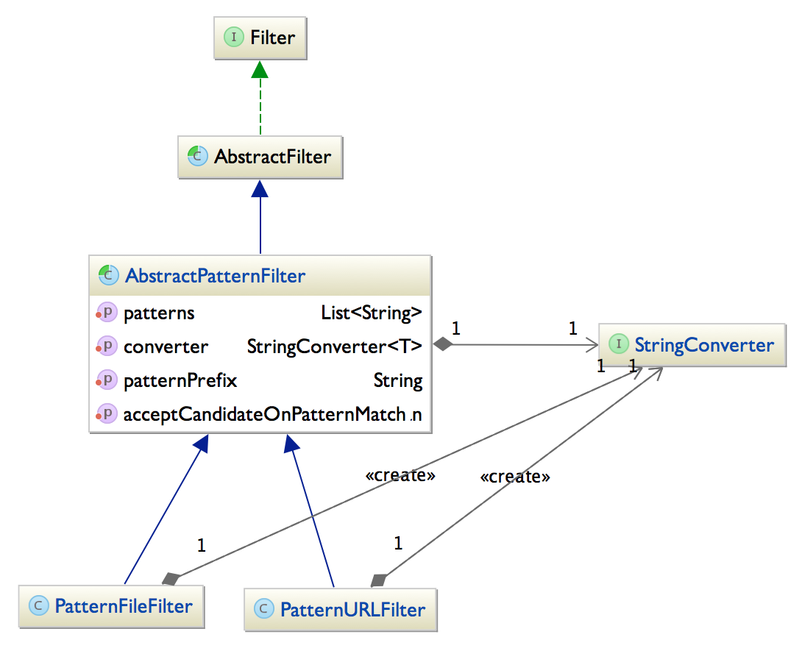
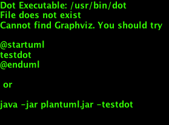

Filters and Filtering
Note: This documentation pertains to the 2.x version of the plugin.
Frequently, we would like exclude some files from being used as sources for XJC or SchemaGen.
For example, if all Java Sources placed under src/main/java except one should be used to
distill the XSD files by SchemaGen we must configure the SchemaGen mojo to exclude that particular
file.
This type of operation is done with a Filter, which - in this case - identifies Files to exclude
from the normal operation. The Java world sports several projects that define Filters, such as
the filter definitions in Apache ANT,
the LambdaJ from Google or the JDK 8 java.util.stream
collection filtering. Most of these implementations, however, work in slightly different ways
which tends to complicate the life of us programmers quite a bit. Just remembering the exact
syntax to create a Filter from one of these projects can be somewhat problematic. Moreover, the
JDK 8 mechanics cannot be used as the jaxb2-maven-plugin must be binary compatible with JDK 1.6+.
Filters in the JAXB2 Maven Plugin
Filters used by the JAXB2 Maven plugin are visitors, similar in structure to the well-known java.io.FileFilter.
As shown in the listing below, the Filters used by the Jaxb2 Maven Plugin sport 2 methods:
-
initialize: Injects the active Maven Log into the Filter, to enable proper logging from within the Filter. -
accept: The actual filter method which returnstrueif the given candidate is accepted andfalseotherwise.public interface Filter<T> { /** * Initializes this Filter, and assigns the supplied Log for use by this Filter. * * @param log The non-null Log which should be used by this Filter to emit log messages. */ void initialize(Log log); /** * @return {@code true} if this Filter has been properly initialized (by a call to * the {@code initialize} method). */ boolean isInitialized(); /** * <p>Method that is invoked to determine if a candidate instance should be accepted or not. * Implementing classes should be prepared to handle {@code null} candidate objects.</p> * * @param candidate The candidate that should be tested for acceptance by this Filter. * @return {@code true} if the candidate is accepted by this Filter and {@code false} otherwise. * @throws java.lang.IllegalStateException if this Filter is not initialized by a call to the * initialize method before calling this matchAtLeastOnce method. */ boolean accept(T candidate) throws IllegalStateException; }
While this Filter implementation is simple enough to be implemented directly, the jaxb2-maven-plugin codebase contains implementations intended to simplify creating custom Filters - and indeed some concrete implementations as well. The inheritance hierarchy contains several types, as shown in the image below:

The Filter types are described below:
AbstractFilter: abstract Filter implementation. Handles separating null candidate values from non-null ones, and delegates processing to concrete subclass implementations.AbstractPatternFilter: subclass to AbstractFilter, which contains a List ofjava.util.regex.Patternobjects used to match/accept a candidate or reject it. Since java regexp Patterns work primarily on Strings, each AbstractPatternFilter has aStringConverterwhich converts candidate objects to strings for matching.
The jaxb2-maven-plugin also contains two concrete Filter implementations, directly usable in the plugin's configuration:
PatternFileFilter: An AbstractPatternFilter implementation which matchesjava.io.Files. By default, the PatternFileFilter has a StringConverter which submits the full path of each File for matching. You can change the implementation by setting theconverterproperty to a custom converter which uses another algorithm for converting each candidate File to a String for matching.PatternURLFilter: An AbstractPatternFilter implementation which matchesjava.io.URLs. Unless overridden, the PatternURLFilter uses a normalized string form of each submitted URL for matching. (Normalizing a URL is done in the following manner:anURL.toURI().normalize().toURL().toString()).
A slightly more detailed class diagram than the one above is shown below:

Filter examples: PatternFileFilter
Excluding some files from processing is a straightforward task. Create a PatternFileFilter instance and populate
it with some pattern strings from which it should create java.util.regexp.Patterns. A PatternFileFilter which matches
any file whose full path end with .xsd or .foo is defined as follows:
<filter implementation="org.codehaus.mojo.jaxb2.shared.filters.pattern.PatternFileFilter">
<patterns>
<pattern>\.xsd</pattern>
<pattern>\.foo</pattern>
</patterns>
</filter>
But … wait a second. If the patterns supplied in the configuration snippet above are intended to match the full
path of the file /some/path/to/src/main/xsd/blah.xsd, the pattern specification above is clearly not sufficient.
The PatternFileFilter must prepend some other string to create a Pattern able to match the given file path.
The string prepended to the supplied patterns is given by the configuration property patternPrefix, which defaults
to the value (\\p{javaLetterOrDigit}|\\p{Punct})+. Therefore, each pattern string in the configuration above is
prepended to yield the two effective patterns:
(\\p{javaLetterOrDigit}|\\p{Punct})+\.xsd, and(\\p{javaLetterOrDigit}|\\p{Punct})+\.foo
These two patterns are sufficient for matching the fully qualified path of the file
/some/path/to/src/main/xsd/blah.xsd. For clarity, the effective pattern string used to compile the Patterns for
matching files are also emitted when you run the jaxb2-maven-plugin with debug log settings. An example of
typical output plugin debug logging is harvested from one of the integration tests in the jaxb2-maven-plugin itself.
Note the two resulting regular expressions used by the PatternFileFilter:
+=================== [Filtered sources]
|
| 1 Exclude patterns:
| [1/1]: Filter [PatternFileFilter]
| Processes nulls: [false]
| Accept on match: [true]
| 2 regularExpressions ...
| [0/2]: (\p{javaLetterOrDigit}|\p{Punct})+\.xsd
| [1/2]: (\p{javaLetterOrDigit}|\p{Punct})+\.foo
|
| 1 Standard Directories:
| [1/1]: src/main/xsd
|
| 3 Results:
| [1/3]: file:/Users/lj/Development/Projects/Codehaus/github_jaxb2_plugin/target/it/xjc-exclude-file-patterns/src/main/foo/gnat.txt
| [2/3]: file:/Users/lj/Development/Projects/Codehaus/github_jaxb2_plugin/target/it/xjc-exclude-file-patterns/src/main/someOtherXsds/fooSchema.txt
| [3/3]: file:/Users/lj/Development/Projects/Codehaus/github_jaxb2_plugin/target/it/xjc-exclude-file-patterns/src/main/someOtherXsds/some_schema.bar
|
+=================== [End Filtered sources]
A maven configuration for creating a PatternFileFilter which excludes any source files whose full paths end in
either .xsd or .foo is done as follows:
<!--
When providing xjcSourceExcludeFilters, the default exclude
Filter definitions are overridden by the Patterns supplied.
The filter below matches all Files with full paths that end with ".xsd" or ".foo".
-->
<xjcSourceExcludeFilters>
<filter implementation="org.codehaus.mojo.jaxb2.shared.filters.pattern.PatternFileFilter">
<patterns>
<pattern>\.xsd</pattern>
<pattern>\.foo</pattern>
</patterns>
</filter>
</xjcSourceExcludeFilters>
Filters can be used to identify files to be excluded from processing by XJC and SchemaGen. All configuration properties for Mojos within the jaxb2-maven-plugin use optional Filters to identify these
Configuring a pattern filter
For a fuller example of configuring a PatternFileFilter, refer to the SchemaGen Basic Usage page.
Creating custom Filter implementations
Should you want to integrate another Filter implementation for pattern matching into the jaxb2-maven-plugin
configuration, you can simply implement and configure new Filter. In this case, we recommend that your
implementation extend the AbstractFilter class (or any of its subclasses) to reuse the default lifecycle
implemented there.
When implemented, configure the jaxb2-maven-plugin to use your Filter - and do not forget to add the fully qualified class name of your custom Filter class:
<!--
Use a custom Filter to find and exclude XJC sources.
-->
<xjcSourceExcludeFilters>
<filter implementation="my.custom.Filter">
... Configuration properties for your Filter implementation here ...
</filter>
</xjcSourceExcludeFilters>
Feel free to submit well-documented Filter implementations to the jaxb2-maven-plugin team if you feel they ought to be included within the standard distribution.